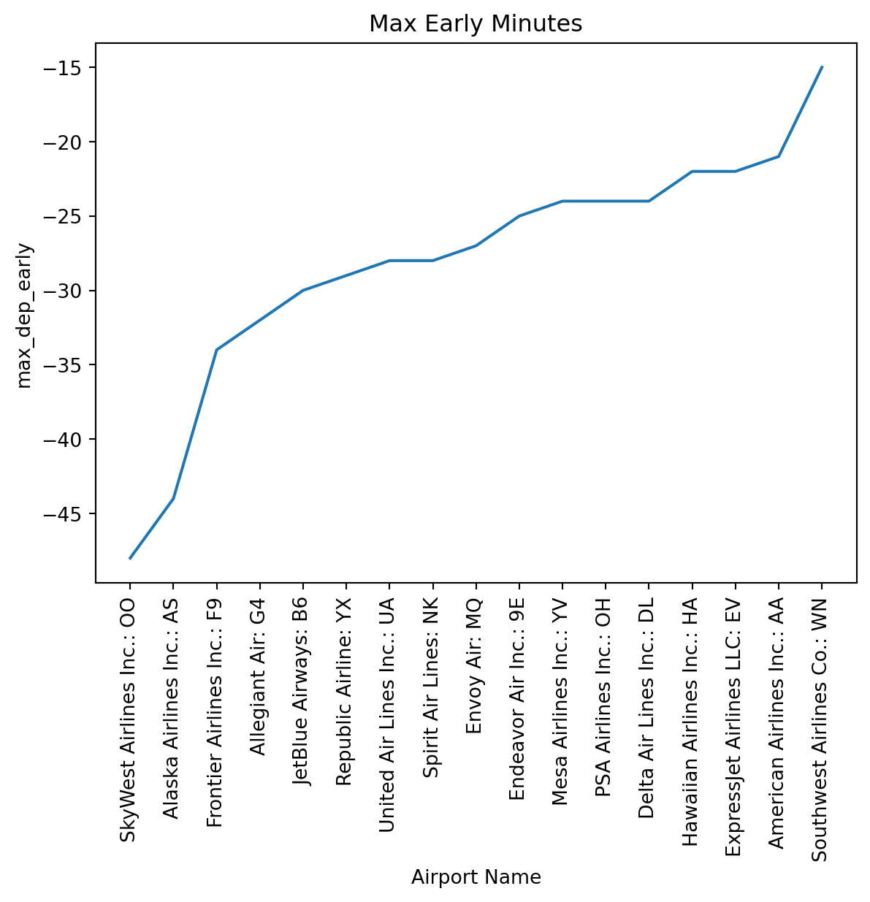
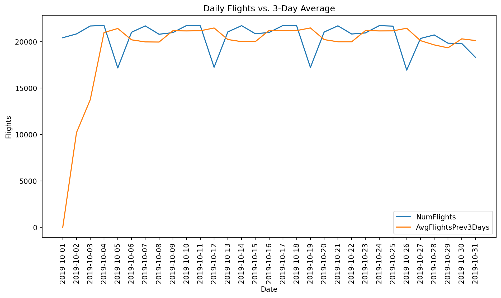

Exploratory Analysis & Visuals
Visualizations
The line chart shows the maximum departure delay for each airline, and the differences are striking. The curve rises steadily, with some carriers showing delays close to 400–600 minutes, while others exceed 1,500 minutes, and a few even surpass 2,000 minutes.
This pattern highlights that maximum delays vary dramatically across airlines and are heavily driven by rare but extremely disruptive events, such as severe weather, mechanical issues, or cascading delays across the network. The upward trend toward the right side of the plot indicates that several regional and major carriers experience far more severe delay outliers than the rest of the group.

The line chart shows the maximum departure delay for each airline, and the differences are striking. The curve rises steadily, with some carriers showing delays close to 400–600 minutes, while others exceed 1,500 minutes, and a few even surpass 2,000 minutes.
This pattern highlights that maximum delays vary dramatically across airlines and are heavily driven by rare but extremely disruptive events, such as severe weather, mechanical issues, or cascading delays across the network. The upward trend toward the right side of the plot indicates that several regional and major carriers experience far more severe delay outliers than the rest of the group.

The plot shows a clear weekly pattern in flight volume. Weekdays, especially from Tuesday to Thursday, have the highest number of flights, all above 100,000. Starting Friday, flight volume begins to drop, and the decline continues into the weekend. Saturday has the fewest flights by a large margin, suggesting that airlines schedule significantly fewer departures on weekends. This pattern reflects typical demand and scheduling practices, with peak activity occurring mid-week and reduced traffic toward the end of the week.
| AirlineName | AirportName | AvgDelay | |
|---|---|---|---|
| 0 | Alaska Airlines Inc.: AS | Columbus, OH: John Glenn Columbus International | 35.1613 |
| 1 | Allegiant Air: G4 | St. Cloud, MN: St. Cloud Regional | 135.6250 |
| 2 | American Airlines Inc.: AA | Amarillo, TX: Rick Husband Amarillo International | 47.9677 |
| 3 | Delta Air Lines Inc.: DL | South Bend, IN: South Bend International | 50.0000 |
| 4 | Endeavor Air Inc.: 9E | Louisville, KY: Louisville Muhammad Ali Intern... | 30.7895 |
| 5 | Envoy Air: MQ | Bozeman, MT: Bozeman Yellowstone International | 56.9655 |
| 6 | ExpressJet Airlines LLC: EV | Midland/Odessa, TX: Midland International Air ... | 45.7500 |
| 7 | Frontier Airlines Inc.: F9 | Green Bay, WI: Green Bay Austin Straubel Inter... | 58.1429 |
| 8 | Hawaiian Airlines Inc.: HA | Pago Pago, TT: Pago Pago International | 18.8889 |
| 9 | JetBlue Airways: B6 | Houston, TX: George Bush Intercontinental/Houston | 140.6000 |
| 10 | Mesa Airlines Inc.: YV | Burlington, VT: Burlington International | 116.1250 |
| 11 | PSA Airlines Inc.: OH | Lansing, MI: Capital Region International | 30.9355 |
| 12 | Republic Airline: YX | Colorado Springs, CO: City of Colorado Springs... | 66.0000 |
| 13 | SkyWest Airlines Inc.: OO | West Yellowstone, MT: Yellowstone | 97.7692 |
| 14 | Southwest Airlines Co.: WN | New York, NY: LaGuardia | 18.6306 |
| 15 | Spirit Air Lines: NK | Phoenix, AZ: Phoenix Sky Harbor International | 34.1290 |
| 16 | United Air Lines Inc.: UA | Aguadilla, PR: Rafael Hernandez | 46.5161 |
This result shows the airport with the highest average departure delay for each airline. The delays vary widely, driven not only by the airline itself but by airport-specific conditions. Some worst delays occur at major hubs (e.g., JetBlue at Houston), while others appear at small regional airports (e.g., Allegiant at St. Cloud), supporting the broader finding that smaller airports can be especially prone to severe delays.
CancelReason
Weather 1883
Carrier 970
National Air System 377
Name: NumCancel, dtype: int64#Across all airports, weather accounts for 1,883 cancellations, which is almost double the number of carrier-related cancellations (970) and nearly five times the number of National Air System cancellations (377).
#This indicates that weather is the most influential and uncontrollable factor affecting flight disruptions, and it plays a significantly larger role than airline-specific issues or system-wide air traffic control constraints.
AirportName
Dallas/Fort Worth, TX: Dallas/Fort Worth International 347
Denver, CO: Denver International 334
Chicago, IL: Chicago Midway International 103
Chicago, IL: Chicago O'Hare International 85
Los Angeles, CA: Los Angeles International 84
New York, NY: LaGuardia 81
Dallas, TX: Dallas Love Field 78
New York, NY: John F. Kennedy International 74
Charlotte, NC: Charlotte Douglas International 66
Burbank, CA: Bob Hope 57
Name: NumCancel, dtype: int64The airports with the highest number of cancellations are mostly large hub airports, where traffic volume is high and disruptions propagate more easily. Dallas/Fort Worth (DFW) leads with 347 cancellations, followed by Denver (DEN) at 334. These airports experience a mixture of severe weather patterns and high operational loads, making them more vulnerable to cancellations.
Chicago’s two major airports—Midway (MDW) and O’Hare (ORD)—also appear in the top list, suggesting that Midwestern weather conditions and heavy traffic play an important role in cancellation frequency. Major coastal hubs like Los Angeles (LAX) and New York’s LaGuardia and JFK also rank high, reflecting both their operational scale and congestion-related challenges.

This plot visualizes the daily number of flights alongside a 3-day moving average. The daily series exhibits clear spikes and dips, suggesting a weekly cycle in flight volume. In contrast, the moving average smooths out these short-term fluctuations and reveals a relatively steady overall trend. The first two days are excluded from the moving-average line because insufficient historical data is available to compute the average.